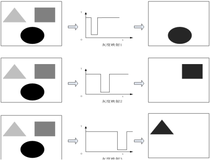
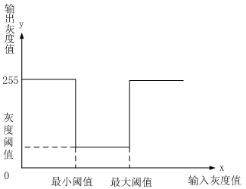

阈值范围工具是一种图像预处理工具，主要通过灰度映射方式凸显用户感兴趣灰度范围的图像，同时削弱其他灰度带来的影响。如图1 所示，阈值范围工具通过不同的映射函数，可以得到用户感兴趣的灰度范围信息。

| 分类 | 参数名称 | 参数描述 |
|---|---|---|
| 属性窗口 | 最大阈值 | 要变换像素的上限。 |
| 最小阈值 | 要变换像素的下限。 |
|
| 输出灰度阈值 | 输出的灰度阈值。 |
|
| 图像窗口 | 输入图像 | 需要变换的图像。 |
| 数据链 | 输入图像 | 需要变换的图像。 |
| 高级界面 | 无 | 无 |
| 分类 | 参数名称 | 参数描述 |
|---|---|---|
| 监视窗口 | 输入图像 | 需要变换的图像。 |
| 输出图像 | 变换后的图像。 | |
| 执行结果 | 工具执行结果。 | |
| 执行时间 | 工具执行时间。 | |
| 图像窗口 | 输出图像 | 处理后的图像。 |
| 执行结果 | 显示工具执行结果，执行成功显示“OK”，执行失败显示“NG”，同监视窗口的执行结果参数。 | |
| 数据链 | 输出图像 | 变换后的图像。 |
用户输入一个感兴趣灰度范围中的最大灰度值，如果输入灰度值大于该阈值，则输出灰度值为255。
用户输入一个感兴趣灰度范围中的最小灰度值，如果输入灰度值小于该阈值，则输出灰度值为255。
用户输入一个感兴趣灰度范围处理后的灰度值，如果输入灰度值在最大阈值和最小阈值之间，则输出灰度值即为灰度阈值。
阈值范围工具通过灰度映射的方式，将输入图像的灰度值映射到输出图像上。基本原理如图2所示，将输入灰度图像的灰度值与设定的最大阈值和最小阈值比较，如果该灰度值在最大阈值和最小阈值之间，则输出图像在该位置的灰度为灰度阈值g，反之则设置为255。

无
参见“\Samples\阈值范围工具.gvp”。